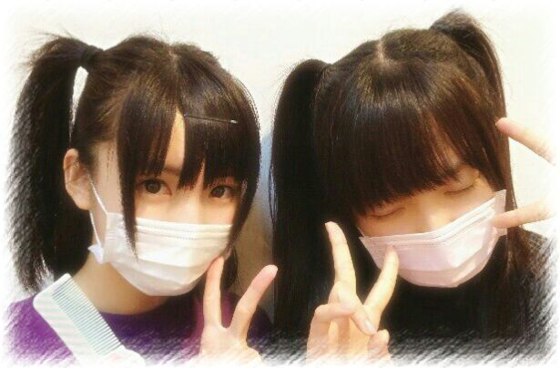

| 2013/09 27 Fri | ひめたん(*>ω<*)そ の347 |

どうも、文学少女です
あんのーあれです、
「考える人」ポーズのつもりです
あっ生写真の衣装ね(^O^)＊
ひめたん髪ほんのりブラウンのはずなのに
みんなから
すっかり黒髪になったねって言われる......
ひめたんはブラウンがいいのだ！
なぜ真っ黒になってしまったのだ髪よ！
髪よ(´・ω・｀)髪よ......
そーなのよー
さゆにゃん (井上小百合ちゃん)のアメブロに
ひめにゃんが登場したのよみなさーん
前髪もさゆにゃん分けしてたんだけどね
写めでは戻ってしまったよ。
ふたりしてマスクしてんのが
あの写めの最大のミソですね！
そんな感じでさゆにゃんありがとー♪
＼ さゆにゃん ＊ ひめにゃん ／

すっぴんちゃんで失礼。
そーそ、コメント読んでたら
万理華 (伊藤万理華ちゃん)が
書いてくれた似顔絵載せてよーって声が
たくさんあったのでまた貼ります。
だからちょーっと待っててね！
楽天イーグルスさん
パ・リーグ優勝おめでとうございます＼(^O^)／
まいやん (白石麻衣ちゃん)パワーかな！
ひめたんも試合の応援行きたいなー
ひめたんの地元の球団広島東洋カープさんも
CSに進んだとゆーことで
今住んでる東京の読売ジャイアンツさんも
CSに進んだとゆーことで
いやー今年はプロ野球がアツいね！
ひめたんはもう、
ルールあんまよくわからんとか
言ってる場合じゃないです。
とゆーことで誰か
野球のルール教えてください(小声)
乃木坂46初の写真集「乃木坂派」
みんなで林間学校行ってきましたって感じで
自然体な感じが
おさめられてると思います＼(^O^)／
夏のやりたいこと全部やってきました
なんか、より一層
みんなと仲良くなれた気がします！
出来上がりが届くの楽しみだなー
きっとステキな作品になってると思う。
詳しくは公式サイトへ☆
どうも、文学少女です
あんのーあれです、
「考える人」ポーズのつもりです
あっ生写真の衣装ね(^O^)＊
ひめたん髪ほんのりブラウンのはずなのに
みんなから
すっかり黒髪になったねって言われる......
ひめたんはブラウンがいいのだ！
なぜ真っ黒になってしまったのだ髪よ！
髪よ(´・ω・｀)髪よ......
そーなのよー
さゆにゃん (井上小百合ちゃん)のアメブロに
ひめにゃんが登場したのよみなさーん
前髪もさゆにゃん分けしてたんだけどね
写めでは戻ってしまったよ。
ふたりしてマスクしてんのが
あの写めの最大のミソですね！
そんな感じでさゆにゃんありがとー♪
＼ さゆにゃん ＊ ひめにゃん ／
すっぴんちゃんで失礼。
そーそ、コメント読んでたら
万理華 (伊藤万理華ちゃん)が
書いてくれた似顔絵載せてよーって声が
たくさんあったのでまた貼ります。
だからちょーっと待っててね！
楽天イーグルスさん
パ・リーグ優勝おめでとうございます＼(^O^)／
まいやん (白石麻衣ちゃん)パワーかな！
ひめたんも試合の応援行きたいなー
ひめたんの地元の球団広島東洋カープさんも
CSに進んだとゆーことで
今住んでる東京の読売ジャイアンツさんも
CSに進んだとゆーことで
いやー今年はプロ野球がアツいね！
ひめたんはもう、
ルールあんまよくわからんとか
言ってる場合じゃないです。
とゆーことで誰か
野球のルール教えてください(小声)
乃木坂46初の写真集「乃木坂派」
みんなで林間学校行ってきましたって感じで
自然体な感じが
おさめられてると思います＼(^O^)／
夏のやりたいこと全部やってきました
なんか、より一層
みんなと仲良くなれた気がします！
出来上がりが届くの楽しみだなー
きっとステキな作品になってると思う。
詳しくは公式サイトへ☆

 ひめたん可愛いから
ひめたん可愛いから
妹になってもらいたいなあ？
そして甘えて欲しいなあ
おにーちゃーん( ^ω^ )/
えーひめたんもおにーちゃーん欲しいー☆
ひめたんはどんな枕でねてるの？
ぴんくのふかふかもふもふ！
高校生何ですが、
週末課題が多いANDムズイんです
どーやったらスイッチはいりますかねー!?
ひめたんもねーお勉強しようにも
その気になれないんだよねー(´・ω・｀)
一緒だねーどーするー？
何でいっつも２、３個持ち歩いてるのー？
歌手の方が常にのど飴を持ち歩くのとおなじで
職業病的なもんだと思う( ω )わからんけど
あ、ちなみにリボンの話ね
男子がキャップ被ってるのどう思う？
いーんじゃなーい？キャップ男子！
りぼん女子にキャップ男子。
あらーステキじゃないですか＊
なぁ、ひめたん。
どうすれば、46番や146番のコメントになるかな？
ひめたんもとったことないから
ちょっとよくわからんけれどもー、
そうだなー
「あっ今日46取る気がする！」って思ったら
46踏んだりするんじゃないですかねー？
ほら、今日はいいことあるかもーとかって予感は
あたるものじゃない( ω )？
人の名前を覚えるのがすごく苦手なんだど、
ひめたんは会ってすぐ、名前覚えられる？
覚える方法ってある？
ひめたんもね得意とかではないんだけど
いっぱい来てくださってる方になると
自然と覚えちゃったりします＼(^O^)／
だから「覚えねば！」って力まんでも
いいと思うよー♪
乃木どこのとき着てたジャージは持参ですか？
ヤンキージャージ？
あれは衣装です(笑)
私服だったらどーするよ(笑)
ビリビリ対決、正直ビビってたでしょ？笑
ビビって前に出ようとしなかったから
最後のいっこを押すハメになったのよ←
でもビリビリの感覚もちょっと気になるよねー
 ところで、ひめたんはカエルは触れますか?
ひめたんがもし、まあやの代わりに
ところで、ひめたんはカエルは触れますか?
ひめたんがもし、まあやの代わりに
かえる触ってたら勝てたかな？
触ったことないからわからんけども
自信はありません(´・ω・｀)
そりゃあ個人PVでカエルさんとお話したり
プリンシパルでカエルさん踏んずけたり
したけれども。
ひめたんが好きなだべものってなにー??
たべものかな( ^ω^ )( ^ω^ )( ^ω^ )
ぷりん！
ひめたん世代も皆ハム太郎見てるんですかね？
ばーりばりハム太郎世代だよー
ハム太郎のお人形さんとかおうちとか
持ってたんだよー♪
りぼんちゃんかわいいよね！
ちび丸ちゃん推しだったよ確か///
最近はまってることありますか？
体内のムクミを徹底的に排除すること！
はまってます(｀・ω・´)かわいさに欠けるなあ
 ひめたんはたこ焼きの味は何派？
ひめたんはたこ焼きの味は何派？
ソースしか知らなかったんだけど
ツアーで大阪行ったとき
いろんな味があってびっくりした！
でもやっぱソースかな◎
寝れないに続くお悩みで
上手に錠剤のおくすりがのめません。
一粒飲もうとすると
うっうううううってなってしまいます
(´・ω・｀)コツってあるのかな

(＊´・ω・＊)
コメント(298)
2013/09/27 00:12